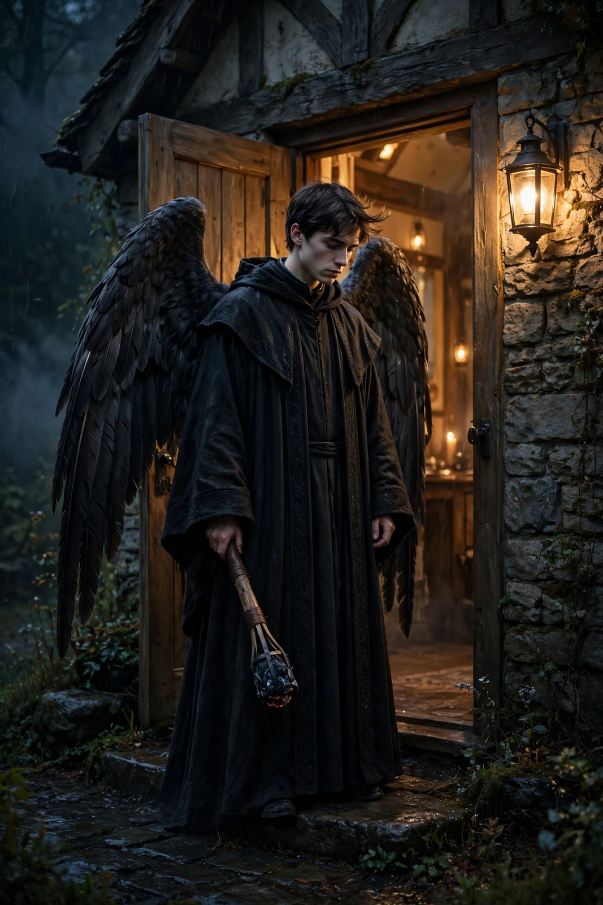

From Wikipedia, the free encyclopedia
| Thanatos | |
|---|---|
| Affiliation | Greek mythology; personification of (non-violent) death |
| Parent | Nyx (Night); twin brother of Hypnos (Sleep) |
| Depicted as | A winged youth with a downturned torch or a sword, cutting a lock of hair |
| Famous tale | Chained by Sisyphus; wrestled by Heracles for Alcestis |

Thanatos is the personification of death in Greek mythology — specifically of death as it comes peacefully, by contrast with the violent Keres who haunt battlefields. Son of Nyx (Night) and twin brother of Hypnos (Sleep) — a pairing the poets loved, the two brothers carrying the fallen hero Sarpedon's body home in the Iliad — he is depicted as a winged, bearded or youthful figure with a downturned, extinguished torch, or cutting the lock of hair that dedicates the dying to the gods below. Unlike Hades, who rules the dead, Thanatos is death itself arriving: hated even by the gods, Hesiod says, because he has a heart of iron and shows no mercy.
Twice the myths let mortals beat him, and both stories define him by the exception. Sisyphus, when Thanatos came with Hades's handcuffs, asked him to demonstrate how they worked — and locked death himself in them, so that no one in the world could die, until Ares, annoyed that battles had lost their point, freed him and handed Sisyphus over. In Euripides' Alcestis, the hero Heracles, guest in a house of mourning, wrestles Thanatos at the tomb — the black-winged figure with his sword come for the queen who died in her husband's place — and wins her back by main strength, an encounter played half as horror, half as folk-tale brawn.
Thanatos gives his name to the Freudian death drive (paired with Eros), to thanatology, the study of death, and to a family of modern characters — from Bergman's chess-playing Death's Greek cousin to comic-book personifications — though the pale, gentle collector of the modern imagination owes more to the medieval dance of death than to this iron-hearted twin of Sleep.
Greek mythology · Hades · Persephone · Hel · Heracles